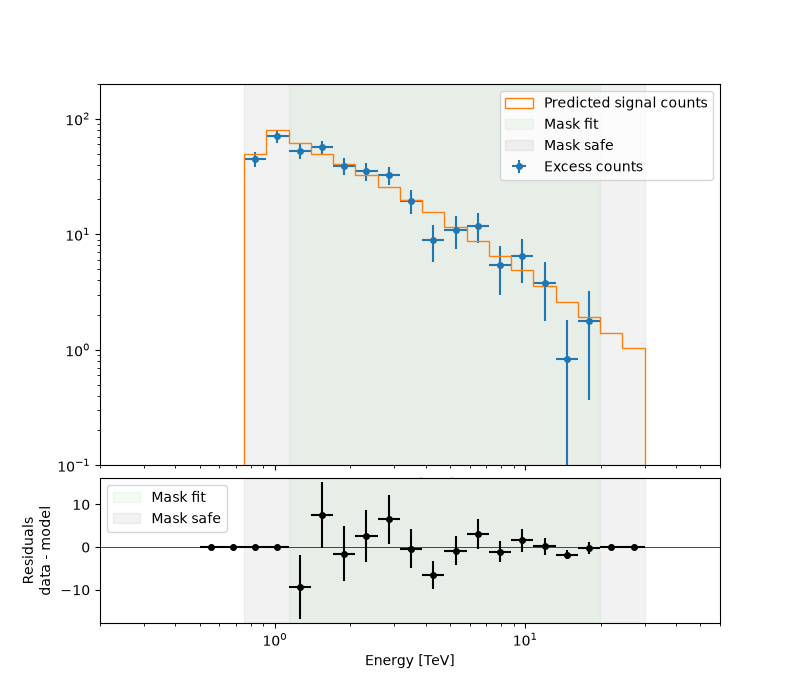
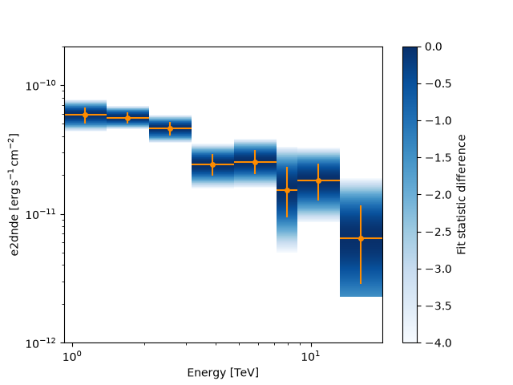
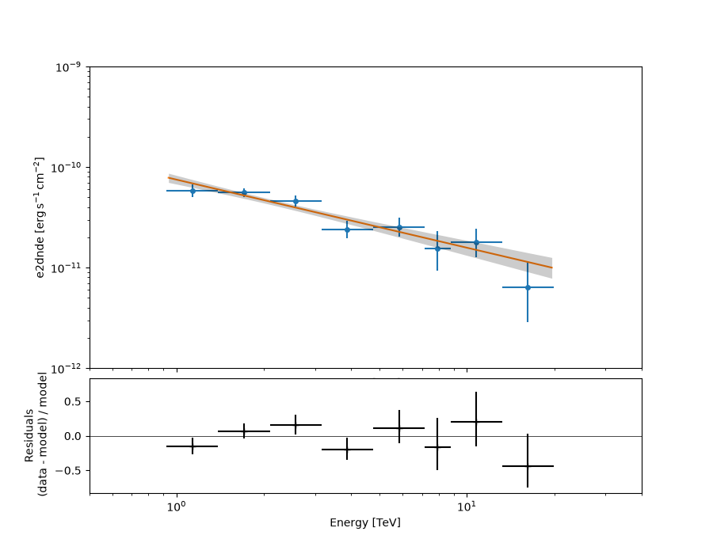

Note
Go to the end to download the full example code or to run this example in your browser via Binder.
Spectral analysis with the HLI#
Introduction to 1D analysis using the Gammapy high level interface.
Prerequisites#
Understanding the gammapy data workflow, in particular what are DL3 events and instrument response functions (IRF).
Context#
This notebook is an introduction to gammapy analysis using the high level interface.
Gammapy analysis consists of two main steps.
The first one is data reduction: user selected observations are reduced to a geometry defined by the user. It can be 1D (spectrum from a given extraction region) or 3D (with a sky projection and an energy axis). The resulting reduced data and instrument response functions (IRF) are called datasets in Gammapy.
The second step consists of setting a physical model on the datasets and fitting it to obtain relevant physical information.
Objective: Create a 1D dataset of the Crab using the H.E.S.S. DL3 data release 1 and perform a simple model fitting of the Crab nebula.
Proposed approach#
This notebook uses the high level Analysis class to orchestrate data
reduction and run the data fits. In its current state, Analysis
supports the standard analysis cases of joint or stacked 3D and 1D
analyses. It is instantiated with an AnalysisConfig object that
gives access to analysis parameters either directly or via a YAML config
file.
To see what is happening under-the-hood and to get an idea of the
internal API, a second notebook performs the same analysis without using
the Analysis class.
In summary, we have to:
Create an
AnalysisConfigobject and the analysis configuration:Define what observations to use
Define the geometry of the dataset (data and IRFs)
Define the model we want to fit on the dataset.
Instantiate a
Analysisfrom this configuration and run the different analysis stepsObservation selection
Data reduction
Model fitting
Estimating flux points
from pathlib import Path
# %matplotlib inline
import matplotlib.pyplot as plt
Setup#
from IPython.display import display
from gammapy.analysis import Analysis, AnalysisConfig
from gammapy.modeling.models import Models
Analysis configuration#
For configuration of the analysis we use the YAML data format. YAML is a machine-readable serialisation format, that is also friendly for humans to read. In this tutorial we will write the configuration file just using Python strings, but of course the file can be created and modified with any text editor of your choice.
Here is what the configuration for our analysis looks like:
yaml_str = """
observations:
datastore: $GAMMAPY_DATA/hess-dl3-dr1
obs_cone: {frame: icrs, lon: 83.633 deg, lat: 22.014 deg, radius: 5 deg}
datasets:
type: 1d
stack: true
geom:
axes:
energy: {min: 0.5 TeV, max: 30 TeV, nbins: 20}
energy_true: {min: 0.1 TeV, max: 50 TeV, nbins: 40}
on_region: {frame: icrs, lon: 83.633 deg, lat: 22.014 deg, radius: 0.11 deg}
containment_correction: true
safe_mask:
methods: ['aeff-default', 'aeff-max']
parameters: {aeff_percent: 0.1}
background:
method: reflected
fit:
fit_range: {min: 1 TeV, max: 20 TeV}
flux_points:
energy: {min: 1 TeV, max: 20 TeV, nbins: 8}
source: 'crab'
"""
config = AnalysisConfig.from_yaml(yaml_str)
print(config)
AnalysisConfig
general:
log:
level: info
filename: null
filemode: null
format: null
datefmt: null
outdir: .
n_jobs: 1
datasets_file: null
models_file: null
observations:
datastore: /home/runner/work/gammapy-docs/gammapy-docs/gammapy-datasets/dev/hess-dl3-dr1
obs_ids: []
obs_file: null
obs_cone:
frame: icrs
lon: 83.633 deg
lat: 22.014 deg
radius: 5.0 deg
obs_time:
start: null
stop: null
required_irf:
- aeff
- edisp
- psf
- bkg
datasets:
type: 1d
stack: true
geom:
wcs:
skydir:
frame: null
lon: null
lat: null
binsize: 0.02 deg
width:
width: 5.0 deg
height: 5.0 deg
binsize_irf: 0.2 deg
selection:
offset_max: 2.5 deg
axes:
energy:
min: 0.5 TeV
max: 30.0 TeV
nbins: 20
energy_true:
min: 0.1 TeV
max: 50.0 TeV
nbins: 40
map_selection:
- counts
- exposure
- background
- psf
- edisp
background:
method: reflected
exclusion: null
parameters: {}
safe_mask:
methods:
- aeff-default
- aeff-max
parameters:
aeff_percent: 0.1
on_region:
frame: icrs
lon: 83.633 deg
lat: 22.014 deg
radius: 0.11 deg
containment_correction: true
fit:
fit_range:
min: 1.0 TeV
max: 20.0 TeV
flux_points:
energy:
min: 1.0 TeV
max: 20.0 TeV
nbins: 8
source: crab
parameters:
selection_optional: all
excess_map:
correlation_radius: 0.1 deg
parameters: {}
energy_edges:
min: null
max: null
nbins: null
light_curve:
time_intervals:
start: null
stop: null
energy_edges:
min: null
max: null
nbins: null
source: source
parameters:
selection_optional: all
metadata:
creator: Gammapy 2.0.dev3509+g1f4eeaec7
date: '2026-04-06T06:43:41.472647'
origin: null
Note that you can save this string into a yaml file and load it as follows:
# config = AnalysisConfig.read("config-1d.yaml")
# # the AnalysisConfig gives access to the various parameters used from logging to reduced dataset geometries
# print(config)
Using data stored into your computer#
Here, we want to use Crab runs from the H.E.S.S. DL3-DR1. We have defined the datastore and a cone search of observations pointing with 5 degrees of the Crab nebula. Parameters can be set directly or as a python dict.
PS: do not forget to set up your environment variable $GAMMAPY_DATA to
your local directory containing the H.E.S.S. DL3-DR1 as described in
Recommended Setup.
Setting the exclusion mask#
In order to properly adjust the background normalisation on regions
without gamma-ray signal, one needs to define an exclusion mask for the
background normalisation. For this tutorial, we use the following one
$GAMMAPY_DATA/joint-crab/exclusion/exclusion_mask_crab.fits.gz
config.datasets.background.exclusion = (
"$GAMMAPY_DATA/joint-crab/exclusion/exclusion_mask_crab.fits.gz"
)
We’re all set. But before we go on let’s see how to save or import
AnalysisConfig objects though YAML files.
Using YAML configuration files for setting/writing the Data Reduction parameters#
One can export/import the AnalysisConfig to/from a YAML file.
config.write("config.yaml", overwrite=True)
config = AnalysisConfig.read("config.yaml")
print(config)
AnalysisConfig
general:
log:
level: info
filename: null
filemode: null
format: null
datefmt: null
outdir: .
n_jobs: 1
datasets_file: null
models_file: null
observations:
datastore: /home/runner/work/gammapy-docs/gammapy-docs/gammapy-datasets/dev/hess-dl3-dr1
obs_ids: []
obs_file: null
obs_cone:
frame: icrs
lon: 83.633 deg
lat: 22.014 deg
radius: 5.0 deg
obs_time:
start: null
stop: null
required_irf:
- aeff
- edisp
- psf
- bkg
datasets:
type: 1d
stack: true
geom:
wcs:
skydir:
frame: null
lon: null
lat: null
binsize: 0.02 deg
width:
width: 5.0 deg
height: 5.0 deg
binsize_irf: 0.2 deg
selection:
offset_max: 2.5 deg
axes:
energy:
min: 0.5 TeV
max: 30.0 TeV
nbins: 20
energy_true:
min: 0.1 TeV
max: 50.0 TeV
nbins: 40
map_selection:
- counts
- exposure
- background
- psf
- edisp
background:
method: reflected
exclusion: /home/runner/work/gammapy-docs/gammapy-docs/gammapy-datasets/dev/joint-crab/exclusion/exclusion_mask_crab.fits.gz
parameters: {}
safe_mask:
methods:
- aeff-default
- aeff-max
parameters:
aeff_percent: 0.1
on_region:
frame: icrs
lon: 83.633 deg
lat: 22.014 deg
radius: 0.11 deg
containment_correction: true
fit:
fit_range:
min: 1.0 TeV
max: 20.0 TeV
flux_points:
energy:
min: 1.0 TeV
max: 20.0 TeV
nbins: 8
source: crab
parameters:
selection_optional: all
excess_map:
correlation_radius: 0.1 deg
parameters: {}
energy_edges:
min: null
max: null
nbins: null
light_curve:
time_intervals:
start: null
stop: null
energy_edges:
min: null
max: null
nbins: null
source: source
parameters:
selection_optional: all
metadata:
creator: Gammapy 2.0.dev3509+g1f4eeaec7
date: '2026-04-06T06:43:41.489835'
origin: null
Running the first step of the analysis: the Data Reduction#
Configuration of the analysis#
We first create an Analysis object from our
configuration.
Observation selection#
We can directly select and load the observations from disk using
get_observations():
The observations are now available on the Analysis object.
The selection corresponds to the following ids:
print(analysis.observations.ids)
['23523', '23526', '23559', '23592']
To see how to explore observations, please refer to the following notebook: CTAO with Gammapy or H.E.S.S. with Gammapy
Running the Data Reduction#
Now we proceed to the data reduction. In the config file we have chosen
a WCS map geometry, energy axis and decided to stack the maps. We can
run the reduction using get_datasets():
Results exploration#
As we have chosen to stack the data, one can print what contains the unique entry of the datasets:
print(analysis.datasets[0])
SpectrumDatasetOnOff
--------------------
Name : stacked
Total counts : 427
Total background counts : 25.86
Total excess counts : 401.14
Predicted counts : 43.14
Predicted background counts : 43.14
Predicted excess counts : nan
Exposure min : 2.90e+07 m2 s
Exposure max : 2.64e+09 m2 s
Number of total bins : 20
Number of fit bins : 18
Fit statistic type : wstat
Fit statistic value (-2 log(L)) : 1396.10
Number of models : 0
Number of parameters : 0
Number of free parameters : 0
Total counts_off : 581
Acceptance : 70
Acceptance off : 1756
As you can see the dataset uses WStat with the background computed with the Reflected Background method during the data reduction, but no source model has been set yet.
The counts, exposure and background, etc are directly available on the dataset and can be printed:
info_table = analysis.datasets.info_table()
info_table
print(
f"Tobs={info_table['livetime'].to('h')[0]:.1f} Excess={info_table['excess'].value[0]:.1f} \
Significance={info_table['sqrt_ts'][0]:.2f}"
)
Tobs=1.8 h Excess=401.1 Significance=37.04
Save dataset to disk#
It is common to run the preparation step independent of the likelihood fit, because often the preparation of counts, collection are and energy dispersion is slow if you have a lot of data. We first create a folder:
path = Path("hli_spectrum_analysis")
path.mkdir(exist_ok=True)
And then write the stacked dataset to disk by calling the dedicated
write() method:
filename = path / "crab-stacked-dataset.fits.gz"
analysis.datasets.write(filename, overwrite=True)
Model fitting#
Creation of the model#
First, let’s create a model to be adjusted. As we are performing a 1D
Analysis, only a spectral model is needed within the SkyModel
object. Here is a pre-defined YAML configuration file created for this
1D analysis:
model_str = """
components:
- name: crab
type: SkyModel
spectral:
type: PowerLawSpectralModel
parameters:
- name: index
frozen: false
scale: 1.0
unit: ''
value: 2.6
- name: amplitude
frozen: false
scale: 1.0
unit: cm-2 s-1 TeV-1
value: 5.0e-11
- name: reference
frozen: true
scale: 1.0
unit: TeV
value: 1.0
"""
model_1d = Models.from_yaml(model_str)
print(model_1d)
Models
Component 0: SkyModel
Name : crab
Datasets names : None
Spectral model type : PowerLawSpectralModel
Spatial model type :
Temporal model type :
Parameters:
index : 2.600 +/- 0.00
amplitude : 5.00e-11 +/- 0.0e+00 1 / (TeV s cm2)
reference (frozen): 1.000 TeV
Or from a yaml file, e.g.
# model_1d = Models.read("model-1d.yaml")
# print(model_1d)
Now we set the model on the analysis object:
Setting fitting parameters#
Analysis can perform a few modeling and fitting tasks besides data
reduction. Parameters have then to be passed to the configuration
object.
Running the fit#
Exploration of the fit results#
print(analysis.fit_result)
display(model_1d.to_parameters_table())
OptimizeResult
backend : minuit
method : migrad
success : True
message : Optimization terminated successfully.
nfev : 37
total stat : 10.29
CovarianceResult
backend : minuit
method : hesse
success : True
message : Hesse terminated successfully.
model type name value unit ... min max frozen link prior
----- ---- --------- ---------- -------------- ... --- --- ------ ---- -----
crab index 2.6768e+00 ... nan nan False
crab amplitude 4.6795e-11 TeV-1 s-1 cm-2 ... nan nan False
crab reference 1.0000e+00 TeV ... nan nan True
To check the fit is correct, we compute the excess spectrum with the predicted counts.
ax_spectrum, ax_residuals = analysis.datasets[0].plot_fit()
ax_spectrum.set_ylim(0.1, 200)
ax_spectrum.set_xlim(0.2, 60)
ax_residuals.set_xlim(0.2, 60)
plt.show()

Serialisation of the fit result#
This is how we can write the model back to file again:
filename = path / "model-best-fit.yaml"
analysis.models.write(filename, overwrite=True)
with filename.open("r") as f:
print(f.read())
components:
- name: crab
type: SkyModel
spectral:
type: PowerLawSpectralModel
parameters:
- name: index
value: 2.6768369866828965
error: 0.10350021514392022
- name: amplitude
value: 4.679478005375114e-11
unit: TeV-1 s-1 cm-2
error: 4.67868391483005e-12
- name: reference
value: 1.0
unit: TeV
covariance: model-best-fit_covariance.dat
metadata:
creator: Gammapy 2.0.dev3509+g1f4eeaec7
date: '2026-04-06T06:43:44.346129'
origin: null
Creation of the Flux points#
Running the estimation#
analysis.get_flux_points()
crab_fp = analysis.flux_points.data
crab_fp_table = crab_fp.to_table(sed_type="dnde", formatted=True)
display(crab_fp_table)
e_ref e_min e_max dnde ... is_ul counts success norm_scan
TeV TeV TeV 1 / (TeV s cm2) ...
------ ------ ------ --------------- ... ----- ------ ------- --------------
1.134 0.924 1.392 2.835e-11 ... False 56.0 True 0.200 .. 5.000
1.708 1.392 2.096 1.193e-11 ... False 102.0 True 0.200 .. 5.000
2.572 2.096 3.156 4.325e-12 ... False 71.0 True 0.200 .. 5.000
3.873 3.156 4.753 1.002e-12 ... False 31.0 True 0.200 .. 5.000
5.833 4.753 7.158 4.655e-13 ... False 24.0 True 0.200 .. 5.000
7.929 7.158 8.784 1.527e-13 ... False 6.0 True 0.200 .. 5.000
10.779 8.784 13.228 9.692e-14 ... False 11.0 True 0.200 .. 5.000
16.233 13.228 19.921 1.523e-14 ... False 3.0 True 0.200 .. 5.000
Let’s plot the flux points with their likelihood profile
fig, ax_sed = plt.subplots()
crab_fp.plot(ax=ax_sed, sed_type="e2dnde", color="darkorange")
ax_sed.set_ylim(1.0e-12, 2.0e-10)
ax_sed.set_xlim(0.5, 40)
crab_fp.plot_ts_profiles(ax=ax_sed, sed_type="e2dnde")
plt.show()

Serialisation of the results#
The flux points can be exported to a fits table following the format defined here
filename = path / "flux-points.fits"
analysis.flux_points.write(filename, overwrite=True)
Plotting the final results of the 1D Analysis#
We can plot of the spectral fit with its error band overlaid with the flux points:
ax_sed, ax_residuals = analysis.flux_points.plot_fit()
ax_sed.set_ylim(1.0e-12, 1.0e-9)
ax_sed.set_xlim(0.5, 40)
plt.show()

/home/runner/work/gammapy-docs/gammapy-docs/gammapy/.tox/build_docs/lib/python3.11/site-packages/gammapy/modeling/models/spectral.py:650: UserWarning: This axis already has a converter set and is updating to a potentially incompatible converter
ax.plot(energy.center, flux.quantity[:, 0, 0], **kwargs)
What’s next?#
You can look at the same analysis without the high level interface in Spectral analysis.
As we can store the best model fit, you can overlay the fit results of both methods on a unique plot.
Total running time of the script: (0 minutes 13.657 seconds)